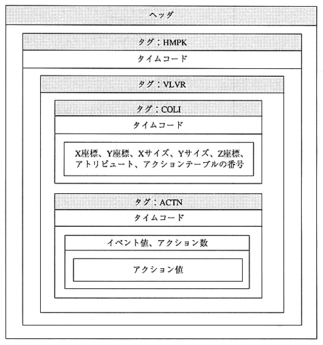

Return to previous page ｜ Return to menu ｜ Go to next page
-
5.4 Collision file in text format
A - collision file is created for each video file and picture file. It has coordinate data for collision judgment and processing data at the time of collision.
The format image is shown in Figure 5.7 and the format is shown in Figure 5.7. Details of the items are shown in Table 5.8.

Figure 5.7 Format image diagram
Return to previous page ｜ Return to menu ｜ Go to next page